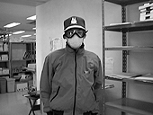
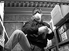
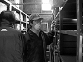

98.2.2（月）
2時より、高畑さんから、作画スタッフ向けの作品説明会がある。なぜこの作品なのか、作画をするにあたっての心構え、考え方等、約2時間喋りっぱなしの大演説となる。
絵コンテ、シーン4-50 35.5秒分アップ。計26分51.5秒。
小西氏のキャラ表が完成。
98.2.3（火）
2時より、稲村、山森、桑名、山田四氏の作画打ち合わせが行われる。
作監修正を動画の一部に使うため、原画を保存する際、修正が無い部分を制作がコピーで補完する方法が取られるが、作業量がかなりのものになるらしい。居村君が「制作を増やして欲しい」と弱音を吐いているが、実際にCUTが流れるまで状況を静観することに。
CUTの流れが複雑なので伊藤君が一目で流れが分かる表を作ることに。
今日は節分であるが、デスクの神村氏が「今日の夕食は巻き寿司ですよね」と当然のように言い出した。高畑監督以下、ほとんどの人が何のことだかさっぱり分からない。聞くと、どうも関西方面では節分に巻き寿司のまるかぶり（巻き寿司をその年の神様がいるという方角を向きながら無言で食べる）という行事を行うことが通例らしい。岡山育ちの高畑監督は「そんな行事は聞いたことがない」と百科辞典などをひっぱりだし、調べてみるがそんなものは載っていない。インターネットで調べてみてようやく真相が分かってきた。もともとは愛知か大阪の風習（大阪出身の神村氏や米沢氏の実家では、少なくとも祖父母の代に行われていたらしい）だったのを、大阪海苔問屋協同組合が1977年にイベントとして実施したのが全国に広まったらしい。高畑監督等メインスタッフは「商売に乗せられるのはなんだなー」と言いながらも、小僧寿しで巻き寿司を買ってきて、恵方（今年は南南東）を向きながら無言で巻き寿司を食べていた。
98.2.4（水）
大谷、二木、安藤、松尾四氏の打ち合わせが行われる。これで原画を描いているメンバーは10人。
ラッシュチェック用にどうかと、最新のプロジェクターを借りてきて試しに見てみるが、あまりのきれいさに一同びっくり。それもそのはず値段が○百万円。おまけにランプが1,000時間で交換しなければならず、その金額が○十万円。うーん。
98.2.5（木）
高畑監督は私用のため夕方で退社。
伊藤君が中心になって進めている進行表だが、複雑すぎてなかなかまとまらない。
98.2.6（金）
1CUTの完成した動画に色をつけて、例のプロジェクターで見る会が行われる。高畑さんの指示で作画全員にも見せるが、みんなまだ面食らっているという感じ。また実際の絵を大画面で見たことにより、いくつか直して行かなければならない点も浮き彫りになってきた。
6時半より声の打ち合わせ。新たに候補者がリストアップされ、テープで声を聞く。
98.2.7（土）
昨日のチェックで問題となったキャラクターの髪の毛について、いくつかパターンを作って実験することになり、斎藤君が何種類か描いてみるが、なかなか上手くいかない。
高畑監督のマックが昨日からフリーズ連発。
98.2.9（月）
問題になっているキャラクターの髪の毛のテスト用素材を斎藤君が作り、保田さんにコンピュータに取り込んでもらうが、なかなか上手くいかない。再度やり直し。
鈴木プロデューサーと宮崎監督が、ベルリン映画祭に「もののけ姫」が招待されたため、空路ベルリンに向かう。
松瀬氏が作打ち。
98.2.10（火）
ベルリンに向かった鈴木プロデューサー、向こうからでも自分宛に来た電子メールを読もうと、富士通のインタートップを買い、望月氏に使い方を習って出発していったが、向こうとモジュラーのジャックが合わず、使えない事態に。
新会議室にて、高畑監督と田中直哉、武重両美術が、今までに出来上がったボードを見ながら今後の方針について話し合い。
予想通りレイアウト、原画が凄いスピードで上がってきている。手持ちが無くなりそうな人も出現しているが、田辺さんが、絵コンテ、チェックの両方を行わなくてはならないため、どうしても作業が滞り気味。
百瀬さんが、大雪の後遺症でボンネットが凹んでいる愛車のアルファロメオを新しくしようかと悩んでいる。
98.2.12（木）
次作INや、新人の入社を前に美術部の全面的な模様替えが行われる。
再び声の打ち合わせ。○○○役、○○役、等、候補者のテープを聞くが、鈴木プロデューサーがいないこともあり、結論は出さず。因みに打ち合わせの時に、鈴木プロデューサーが嫌いなため、いつも頼むことが出来なかった、私が気にいっている仕出し弁当を注文する。
98.2.13（金）
総務の○○教授が、一人暮らしには不必要と思えるほど家財道具、家電製品を買いまくっていることからついに結婚か、という噂がひろがっている。
インターネット担当の石光氏が、免許が取れるかどうかの瀬戸際に立たされている。昨年○月から通い始めた教習も忙しくてなかなかうまく通えず、タイムリミットが迫りつつあるのだ。少しでも勉強をと制作陣に問題集を見せて教えを請うが、みんな免許を持っているワリには交通法規をよく知らずまったく役に立たず。さて果たして免許はとれるのか。
改装が続いていた美術ルームに各人をしきるついたてを搬入。迷路のようだが今までとは見違えるようにこぎれいな部屋となった。
98.2.14（土）
田中直哉、武重美術コンビが高畑さんと話し合いを持つ。とりあえず両名はメインスタッフコーナーに机を置いて、そこで作業することに。また他の背景のメンバーには、作品全体の作業量がまだ正確には掴めない状況なので、吉田氏をチーフとして、他の仕事を取ることも考えている。
バレンタインデーにも関わらず（勿論義理チョコしかもらえない）、猛烈な歯痛に襲われる。慌てて歯医者へ行く。夕方は麻酔がかかっているため口から涎を流しながら仕事をする。
二木さん、館野さんにより馬鈴薯が蒸され社員に配られる。いもにつける明太子バターが大好評（歯が痛くても味は分かる）。
鈴木プロデューサーの命令により、倉庫の大掃除。もともと、総務が指揮をして2/7に行う予定だったが、米沢さんが出られないために今日になった。しかし、今日も総務は全員欠席。結局、制作と業務部の男性陣で大掃除を行うが、終わらず。次回は、また鈴木プロデューサーが倉庫掃除を思いだした時に行うということ。



98.2.16（月）
メインスタッフコーナーに田中直哉、武重両氏の机を設置するため、作画の二人に席を移動してもらう。
夕方に鈴木プロデューサーと宮崎監督がベルリンから帰国。かなり疲れたのか、仕事がたまっているはずの鈴木プロデューサーは直帰。と思っていたら、門屋さんが鈴木プロデューサーに「もう夕食食べた？ まだ食べてない。じゃあ家においでよ。ご馳走するから」と鈴木宅に呼ばれ、夜遅くまで仕事の話しをしていたとか。
98.2.17（火）
シナリオ読み合わせが明日行われることとなる。3時半を予定。
鈴木プロデューサー今日から出勤。
原画作業は順調に進行中だが、高畑監督から細かい演技が要求されているため、QARの確認作業に何人も並んでしまう状況になりつつある。もっと増やしてとの要望もアリ。
98.2.18（水）
3時半よりシナリオの読み合わせが行われる。読み手は野中氏と居村氏が担当する。所要時間は○時間○分。
ダビットの中国人の友人が10日程日本に遊びに来る予定だが、中国を出るのに様々な書類が必要となっており、ダビットの外国人登録済証明書も必要だという。一緒に市役所まで取りに行く。
近所に新たな定食屋が出現。以前中華料理屋だった店が、内装がまったく同じまま、店主だけが変わったらしい。おかずを一品づつ選べる、昔から良くある定食屋なのだが、何故かメニューにあった「自家製 よもぎソバ」を注文したらこれがうまいのなんの。こんなに美味しいソバは久しぶりに食べた気がする。早速ジブリに帰り、宣伝。
98.2.19（木）
銀行とのやり取りに今まではマックでウインドウズ95を走らせていたが、いろいろ問題が出てきたため、ジブリ初のウインドウズ95マシンを購入することになる。吉祥寺にて一寸古い安売りマシンを購入。
高畑監督が夕方四時頃、体調不良を訴え、帰宅。ジブリでも流行っている風邪が原因か。神村氏が自宅まで車で送る。
98.2.20（金）
声の打ち合わせが行われる。いよいよ配役決定か。
鈴木プロデューサーが講演のため大阪へ。
制作部で夕食にピザを頼んだのだが、1時間以上たっても来ず、温厚な野中氏が怒りの電話を入れていた。
98.2.21（土）
夜7時頃よりバーにて中途入社歓迎会及び改装記念パーティ（美術、CG、総務、出版）が行われる。メニューはピザ、寿司、ケンタッキー、焼き鳥と酒、とジブリパーティではお馴染みの品々。
○○氏が来ないと思ったら、家に泥棒が入り、警察の対応をしていたからと連絡が入る。取られたのは生活費の2万円ほど。金額は少なかったけど、家のまわりにそんなことするヤツがいると思うとぞっとするよね。
98.2.23（月）
高畑監督、今日はお休み。
制作では、阪神大震災の時のボランティア用に買った携帯電話をそのまま使っていたが、ついに寿命が来たようなので（それにこのアナログ携帯は、数年後に廃止されるという）、新しい物と買い換える。あまりに小さく軽いので、その辺に忘れてきそうで恐い。
98.2.24（火）
先日行われた健康診断の結果が出るが、結果お知らせの紙と共に、なんと二次検査お誘いのお手紙が…。
○○の開発者のイタリア人達が来社。細かい改良を加えるため、何時間もの話し合いを持つ。
追加作打ちシーン4-50 10CUT分が行われる。
98.2.25（水）
今はガイナックスにいる大塚雅彦氏が来社。
3月から作画に参加する予定だった○○氏に連絡するも、前の仕事が終わらず、少し遅れてしまうらしい。
98.2.26（木）
来週の火曜日に、メイン、美術、仕上げ、撮影らの面々が集まって、作品の色彩会議が行われることに。
撮影部にて、○○に彩色したテスト映像を見る。なかなか良い感じに仕上がっているが、まだまだ作画的な改善点はありそう。
メインで、バックするものが少し溜まり、原画陣で手空きになりそうな人がいる。大あわてでCUTを戻す。
先日田辺さんがCDプレイヤーを修理に持ち込み、それが今日上がってきたのだが、故障で取り替えたはずのモーターが、試しに電池をつなげてみると何不自由無く動いてしまうことが発覚。早速モーターに雑誌のおまけのCDを付け（CDを固定する部分もそのまま交換してある）、メインスタッフのテーブルに固定し、電池を通常の倍の4本を直列につないで試運転。静かに高速でまわるCDにみんな興奮し、紙で作った羽根を付けてみたり、「CDのフチに鋸状のぎざぎざを入れましょう」とくだらないことを言いながら、気晴らしをしていた。
98.2.27（金）
田辺氏が夕方から用事で岡山へ。
当分ジブリには来ないはずだった宮崎監督が、「トイレに寄っただけ」と言いつつCG部で雑談。ベルリン映画祭での土産話や愛車が傷だらけ等の楽しい話を聞く。
98.2.28（土）
2時から職場委員会が行われる。社内の組織図の作成やベルリン映画祭の様子等が報告される。
テレビマンユニオンの浦谷さんが来社、何人かにインタビュー。
宮崎監督と鈴木プロデューサーが来週の月曜日からテレビの取材で、サハラ砂漠へ。かなりボロイ飛行機に乗るようなので、鈴木プロデューサーはみんなから「頼むから落ちないでください」とお願いされていた。
| 次のページへ |
| 日誌索引へ戻る |